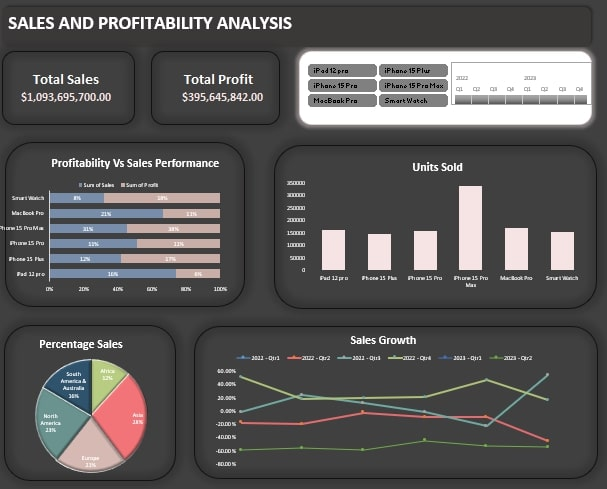
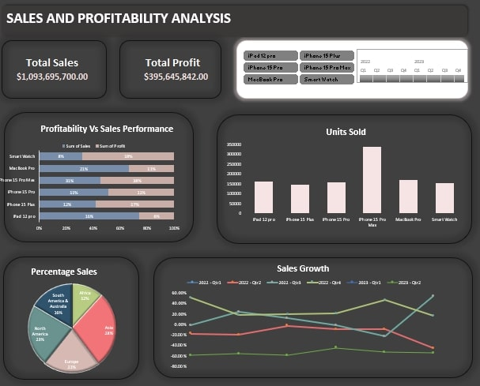

This project involved cleaning and analyzing dataset using SQL. The data cleaning process
included standardizing dates, addressing missing property addresses, handling null values, and
removing duplicate records to ensure data integrity. The analysis phase featured calculating key
statistics, exploring price distributions and outliers, analyzing sales trends, and
performing time series and correlation analyses. This project approach is transforming raw data
into actionable insights, highlighting trends and relationships within the housing market.
 

The project presented focuses on the sales and profitability analysis of a shop that sells
electronics. It includes a detailed examination of sales performance, profitability metrics,
regional distribution of sales, and growth trends using SQL for data query and Excel for data
analysis and creatig Dashboard.

This project involved analyzing employee sentiment and demographic data using Excel to gain
insights into career development opportunities, fairness in promotion decisions, and the
adequacy of company benefits. By conducting cross-tabulation analyses, the study explored
relationships between key demographic variables (such as gender, race/ethnicity, and education
level) and employee perceptions. The findings highlighted areas of strength in employee
satisfaction as well as opportunities for improvement, particularly in ensuring fairness in
promotions and enhancing career development programs. The results will guide targeted
interventions to foster a more inclusive and supportive workplace environment.

In this project, I utilized Power BI to develop a comprehensive Sales Performance Dashboard that
monitors key sales metrics, including delivered orders, lost orders, returned items, and
back-ordered products. The dashboard provides valuable insights into sales trends, order
management efficiency, and inventory challenges, enabling data-driven decision-making. This
analysis allowed for the identification of areas for improvement in sales processes and
inventory management, ultimately supporting strategic planning to enhance overall sales
performance.

In this project, I leveraged Power BI to analyze product sales performance for the year 2020,
focusing on key metrics such as top-selling products, sales trends, profitability, and the
impact of special offers. The interactive dashboard provided clear visualizations and actionable
insights, allowing for strategic recommendations on inventory management, targeted marketing,
and promotional strategies to optimize sales and profitability.

In this project, I utilized Python and the Pandas library to perform comprehensive data analysis on
various real-world datasets. The project involved tasks such as data cleaning, exploratory data
analysis, filtering, grouping, and visualization, showcasing my ability to handle and derive
insights from complex data. The analysis uncovered key trends and patterns across multiple domains,
making this a valuable demonstration of practical data science skills.
This project analyzes one year of retail sales data using Python, Pandas, and Matplotlib to uncover key insights for optimizing business performance. By examining product sales, city-based revenue, monthly trends, and customer purchasing behavior, actionable recommendations were made to improve marketing strategies, cross-selling opportunities, and inventory management. The analysis also explores the correlation between product prices and sales volume to refine pricing strategies for maximum profitability.